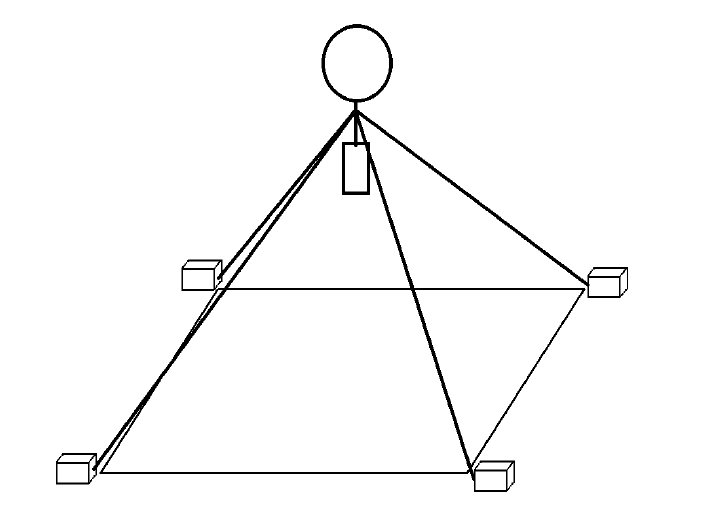
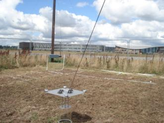

e-Agri Neutrally buoyant tethered UAV for Ultra-Precision Agriculture and Field Phenotyping

Team Members:
Vlad Savu
Tim Wai Khoo
Syahidah Shuhaimi
Andrei Badila
Daniel Salin
Matthew Danby
Afdhal Atiff Tan
Supervised by:
Prof. Bruce Grieve
Prof. Alexander Lanzon
Dr. Antony Barton
Introduction
- An autonomous underconstrained cables driven parallel robot (3-dof)
- Universal toolhead (e.g. GHG measurement probe, targetted pesticide applicator, etc.)
- Low power consumption (Helikite helium balloon as source of uplift)
- Main goal: Improve food security
The Concept
As an extension to SkyGas (University of York)
Motivation
- Non-intrusive and autonomous (unlike tractors)
- Precise positioning than manual labour
- Portable and user friendly interface for farmers
- Use no tall pillars and easy to install on site
- Versatile and multiple purpose toolhead
- Modular and easily scalable
Proposed Design
Why neutrally buoyant?
- Reduce energy consumption for continuous operation)
- Heavy toolhead can be utilised
- Reduce cable tension
- Need no tall pillars
Why Helikite?
- Provide z-axis upward force, and minimise xy-axis disturbances
Why Dyneema?
- Strong and lightwight (420kg, £1.00/m, 0.5kg/100m)
- Alternative: steel (630kg, £0.15/m, 3.5kg/100m)
Why Deep-Cycle Lead Acid Battery?
- Low-cost and tolerate abuse (overcharge/discharge)
- Low Energy density, but, safer than LiPo
Why Custom Design a Winch?
- Close loop system is needed for length measurement
- No known low-cost alternatives
Problem with Electric Winches
- Overpowered (series wound motor consumes high current, even unloaded)
- Limited spool size
Problem with Hand Winches
- Ideal, comes with self-locking spool (worm gear)
- May not be cost effective
Proposed Full Scale Motor
- £395, 24V, 2.2kW, 115.2Nm, 720RPM, brushed
- High torque means no additional gearbox needed
- But, may need braking mechanism
Why Wireless?
- Easier installation/deployment, no long wires
- Convenience, non-intrusive